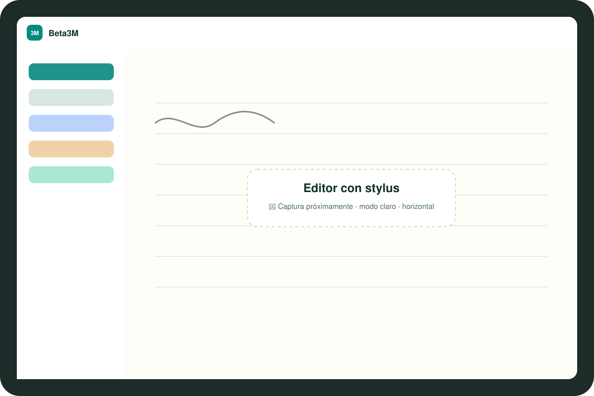
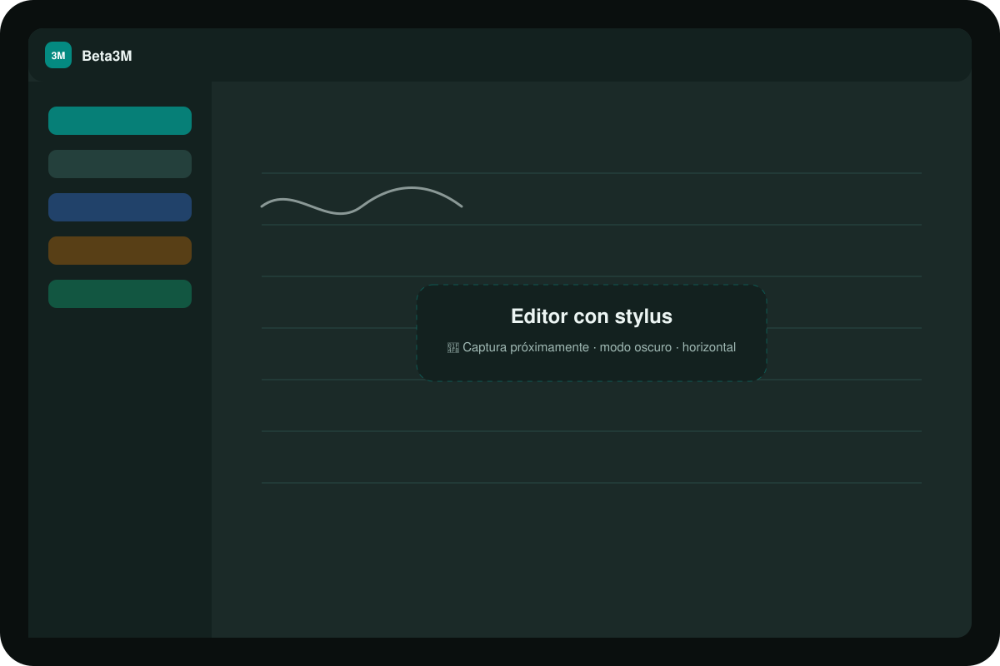
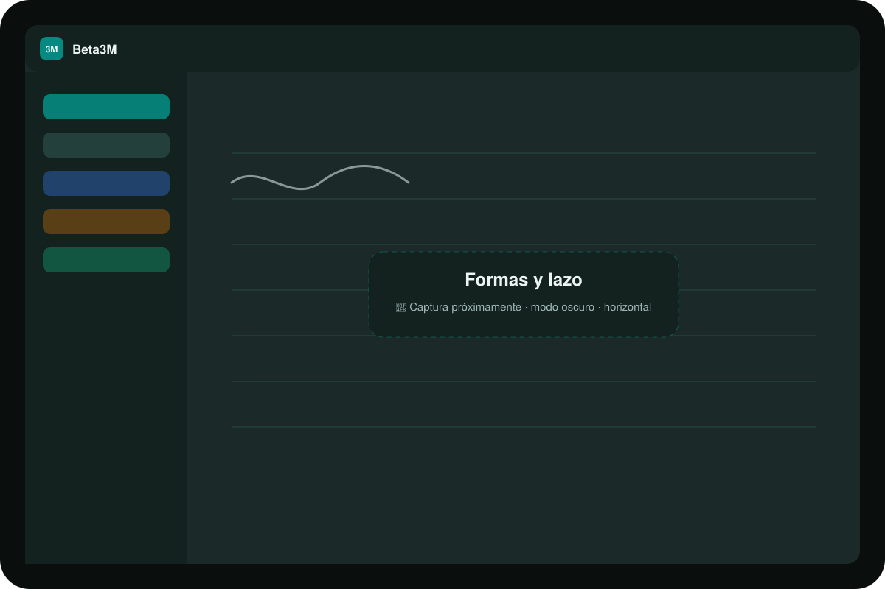

Stylus de baja latencia
Motor de tinta propio con Pointer Events, eventos agrupados y doble capa canvas/SVG.
Escribe con el lápiz como en papel. Beta3M convierte tus fórmulas en LaTeX, tus fotos en apuntes y tus apuntes en preguntas de repaso.

La libertad del papel, la estructura de un editor y una IA que entiende lo que escribes.
Motor de tinta propio con Pointer Events, eventos agrupados y doble capa canvas/SVG.
Escribe una ecuación a mano y se convierte en LaTeX renderizado con KaTeX.
Pizarras, libros y fichas pasan a ser apuntes editables, con fórmulas y tablas.
Mejora, resume, chatea con tu nota y genera preguntas de repaso y flashcards.
Las figuras a mano alzada se enderezan solas, sin IA. El lazo selecciona y mueve.
Todo se guarda en el dispositivo al instante y se sincroniza al volver la red.
Colores, emojis, búsqueda full-text e historial de versiones.
Dos temas cuidados, y una exportación a PDF que siempre sale legible.
Horizontal y vertical, en modo claro y oscuro.



Elegido por rendimiento en el editor, control sobre los datos y coste predecible de la IA.
El cliente nunca toca la base de datos ni tiene claves: todo pasa por una API propia.
Proyecto de final de ciclo de Desarrollo de Aplicaciones Multiplataforma.
Frontend · motor de tinta · interfaz
IA, OCR y sincronización
Backend · API · base de datos
IA, OCR y sincronización
En GitHub encontrarás la arquitectura, las decisiones técnicas y extractos seleccionados. Si quieres ver más, escríbeme y hago una demo en directo.
Ver en GitHub →